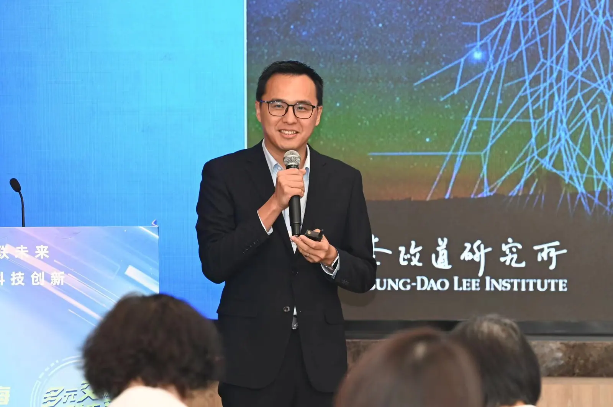
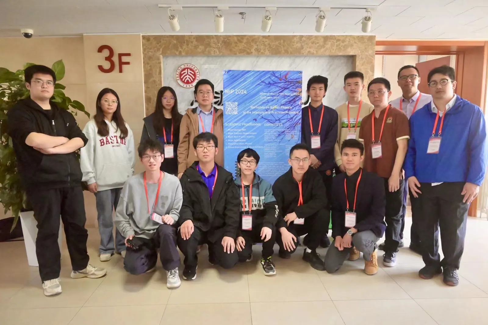
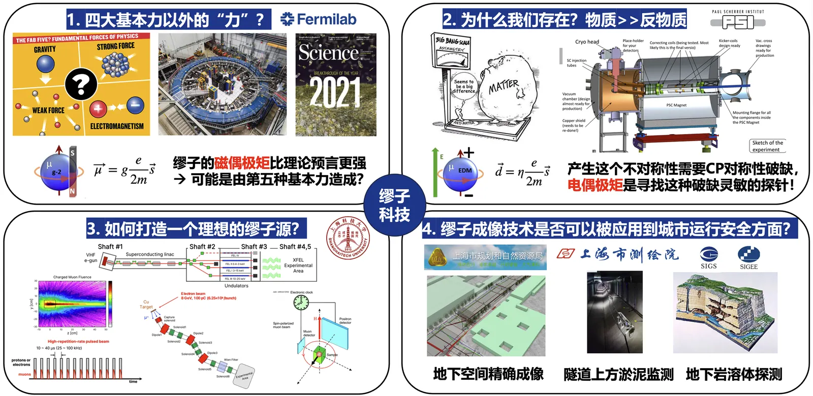

PIKim Siang Khaw许金祥
Kim Siang Khaw许金祥
Principal Investigator · Tenured Associate Professor, TDLI & SPA, Shanghai Jiao Tong University课题组长 · 上海交通大学李政道研究所 / 物理与天文学院 长聘副教授
Kim Siang Khaw (许金祥) is a Tenured Fellow of the Tsung-Dao Lee Institute and Tenured Associate Professor in the School of Physics and Astronomy, Shanghai Jiao Tong University, where he leads the Muon Physics Group. His research uses the muon as a probe — precision measurements of its anomalous magnetic moment and electric dipole moment — to test the Standard Model and search for new physics, alongside a new high-repetition-rate muon source at SHINE and muography for underground space in Shanghai.
Born in Penang, Malaysia, he studied and worked for 16 years in Japan (Osaka University of Foreign Studies, Kyoto University, University of Tokyo), Switzerland (ETH Zurich) and the USA (University of Washington) before moving to Shanghai, and works in Malay, Japanese, German, English and Chinese. Outside physics he enjoys badminton, guitar, cooking, durian and travel — more than 25 countries so far. The profile below is in Chinese.


个人简介
欢迎来到我的个人主页！我是许金祥，现任上海交通大学李政道研究所的李政道学者兼博士生导师。我的研究聚焦于通过缪子探针，精准测量其基本属性（如反常磁矩和电偶极矩），以验证粒子物理的标准模型，并探索可能存在的超越标准模型的新物理现象。我的兴趣非常广泛，除了科研，我也热衷于教育和科普。同时，我享受生活，羽毛球是我最爱的运动之一。此外，我还喜欢弹吉他、烹饪、品尝美食——身为马来西亚槟城人，对榴莲情有独钟。环游世界更是我的兴趣之一，迄今我已踏足超过25个国家、50余座著名城市。我在日本（大阪外国语大学、京都大学、东京大学）、瑞士（苏黎世联邦理工学院）和美国（华盛顿大学）有16年的海外学习和工作经历，加上在上海的5年科研生涯，总共已有20多年的国际经验。这段旅程让我不仅学会了5种语言（马来语、日语、德语、英语、汉语），也通过这些语言开展了物理学的学习和科研工作。如今，我致力于将我的丰富国际经验融入科研和学生培养计划，目标是打造一个积极进取、好奇心强、热爱学习的国际化科研团队。期待在这里与更多志同道合的人共同探索科学的奥秘。


缪子物理的前沿探索：从基础研究到创新应用
缪子作为一种基本粒子，自1936年被发现以来，在粒子物理领域中扮演着举足轻重的角色。通过对其多种性质的精确测量，粒子物理标准模型中的众多自由参数得到了实验的验证与确定，使标准模型成为一个非常成功的理论框架。缪子的反常磁矩是最为灵敏的新物理探针之一，为探索超越标准模型的新物理现象提供了关键线索。而至今仍未被发现的电偶极矩则与宇宙起源及正反物质不对称密切相关。李政道研究所的缪子物理团队主要致力于精确测量缪子的反常磁矩以及探索电偶极矩的前沿基础研究。具体研究内容包括粒子束流与探测器的模拟（Geant4、G4Beamline、FLUKA），粒子物理实验数据处理与物理分析（ROOT、pandas），基于机器学习（BDT、ANN）的实验模拟，及粒子探测器（闪烁体、硅光电倍增管）的研发等工作。这些研究融合了加速器物理、探测器技术、束流动力学及精密磁场测量等尖端技术，构建了实验物理研究的理想环境。与此同时，团队还积极探索基于上海SHINE装置加速器电子的高重频缪子源（与上海高研院、上科大合作），以及基于宇宙射线缪子的地下空间成像（与市测绘院、地调院、地矿集团合作）等创新应用的可行性研究。


团队氛围
我们课题组每周定期举办多项学术活动，包括“粒子物理入门教材阅读会 (Study Group)”、“文献阅读会 (Journal Club)”、“国际合作项目专项组会 (Muon g-2/EDM Group Meeting)”等。团队拥有高度自由的学术氛围，致力于前沿研究，并在国内外会议中非常活跃——每位成员平均每年参加至少两次国内外会议，并报告科研进展。课题组每年招收多名本科生（包括PRP项目、致远学者研究计划、物理研究实践、本科生科研见习），研究生2-5名（含国际研究生），以及优秀的博士后。我们与国内外众多高校和研究所保持紧密合作，并为优秀研究生提供前往美国费米国家实验室 (Fermilab)、瑞士保罗谢勒研究所 (PSI) 等国际顶尖研究机构进行科研培训的机会。欢迎对粒子、核、原子物理精确测量实验有浓厚兴趣的青年才俊与我们联系，共同探索科学的前沿！联系邮箱：kimsiang84 [at] sjtu.edu.cn。